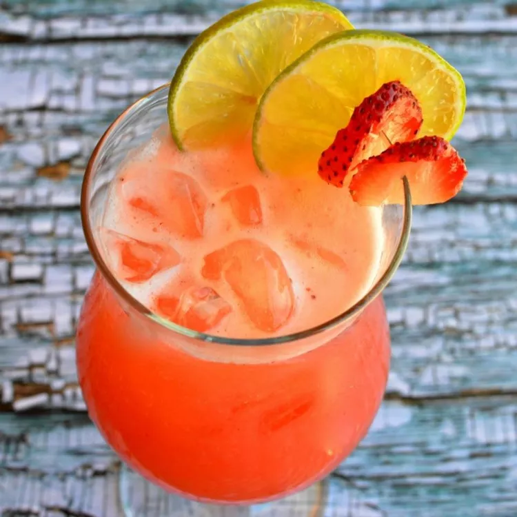

Mexican Strawberry Water

About The Recipe:
This Mexican fruit drink is extremely flavorful and refreshing, especially when fresh strawberries are in season. Fresh fruit waters (agua de frutas) made with crushed or blended fruit are a common and popular drink all over Mexico.
Ingredients:
-
4 cups strawberries, sliced
-
8 cups cold water, divided
-
1 cup white sugar
-
5 cups ice for serving, or as needed
-
1 lime, cut into 8 wedges
-
8 fresh mint sprigs
Directions:
-
Mix together strawberries, sugar, amd 1 cup cold water in a medium bowl. Cover the bowl with plastic wrap and place in the refrigerator for 4 hours.
-
pour chilled strawberry mixture into a blender. Blend on high until smooth. Pour through a wire mesh strainer set over a large bowl;discard pulp and needs. Stir remaining 7 cups cold water into strawberry juice until aqua de fresca is well combined.
-
Fill glasses with ice. Pour aqua de fresca over ice. Garnish each serving with lime wedges and mint leaves.
Tips:
If not serving immediately, place strawberry water(aqua de fresa) in the refrigerator for several hours to chill.